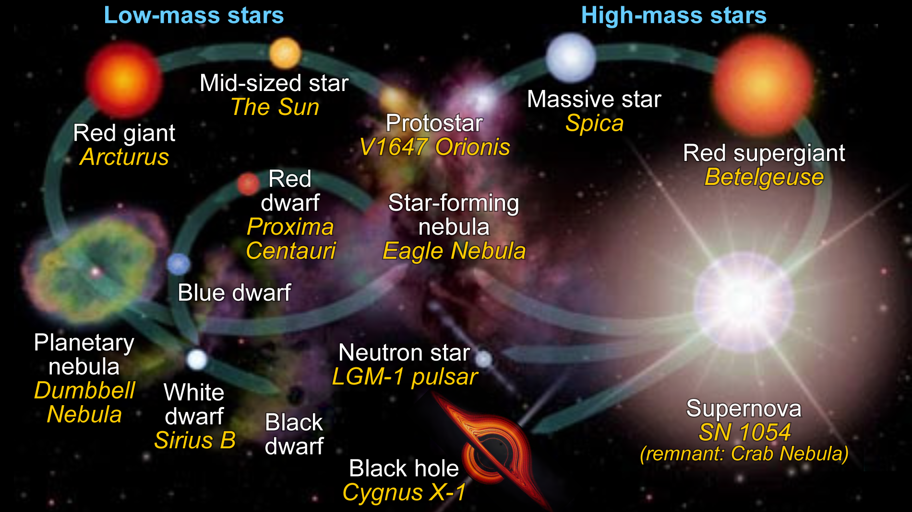

Stars
What are Stars?
A star is a bright sphere of plasma held together by it's own gravity. Many stars are visible in the night sky and they are even categorized into differentconstellations and asterisms. Many of the brightest stars today have names and the observable universe has anywhere between 10^22 to 10^24 stars. Only about 4000 stars are visible to us at night without any magnification.
Observations about Stars
Stars have been important to civilizations throughout the world. They have been part of religious practices, divination rituals, mythology, used for celestial navigation and orientation, to mark the passage of seasons, and to define calendars.
Early astronomers recognized a difference between "fixed stars", whose position on the celestial sphere does not change, and "wandering stars" (planets), which move noticeably relative to the fixed stars over days or weeks. Many ancient astronomers believed that the stars were permanently affixed to a heavenly sphere and that they were immutable. By convention, astronomers grouped prominent stars into asterisms and constellations and used them to track the motions of the planets and the inferred position of the Sun.
The oldest accurately dated star chart was the result of ancient Egyptian astronomy in 1534 BC. The earliest known star catalogues were compiled by the ancient Babylonian astronomers of Mesopotamia in the late 2nd millennium BC, during the Kassite Period (c. 1531 BC – c. 1155 BC).
Fun Fact
The spin axis of the Earth undergoes a motion called precession. If you have ever watched a spinning top, you know that its spin axis tends to stay pointed in the same direction. However, if you give it a slight nudge, the axis will start to change its direction, and its motion traces out a cone. This changing of direction of the spin axis is called precession. So what gave the Earth the "nudge" it needed to start precessing? The Earth bulges out at its equator, and the gravitational attraction of the Moon and Sun on the bulge provided the "nudge" which made the Earth precess. It was the ancient Greek astronomer and mathematician Hipparchus who first estimated the precession of the Earth's axis around 130 B.C. The period of precession is about 26,000 years. In other words, it takes 26,000 years for the axis to trace out the cone one complete time.
So now you can see why Polaris will not always be aligned with the north spin axis of the Earth - because that axis is slowly changing the direction in which it points! Right now, the Earth's rotation axis happens to be pointing almost exactly at Polaris. But in the year 3000 B.C., the North Star was a star called Thuban (also known as Alpha Draconis), and in about 13,000 years from now the precession of the rotation axis will mean that the bright star Vega will be the North Star. Don't feel bad for Polaris, however, because in 26,000 more years it will once again be the Pole Star!